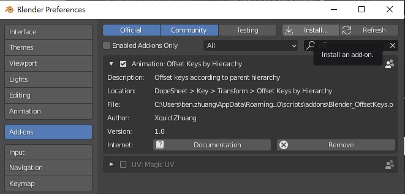
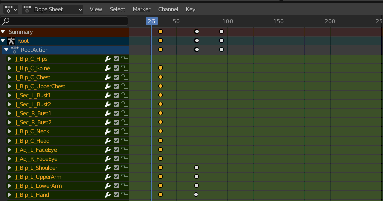

Blender附加元件
參照骨架／Parent層級位移關鍵影格時間
安裝方法

- 到本頁下方下載後得到 Blender_OffsetKeys.zip，無須解壓縮
- 開啟 Blender 主程式並從工具列 Edit > Preferences... > Add-ons 分頁點選 Install... 按鈕
- 選擇剛剛下載的 Blender_OffsetKeys.zip 後，點選 Install Add-on
- 列表會列出剛剛安裝的 Animation: Offset Keys by Hierarchy （如果沒看到請確認上方 Community 選項有被開啟）
- 把名稱旁邊的框框打勾，啟用這個元件！
使用方法

- 在Dope Sheet窗格選取要作用的關鍵影格們
- 至工具列選取 Key > Transform > Offset Keys by Hierarchy
- 左右移動滑鼠游標控制位移量
- 點擊滑鼠左鍵或Enter確定
下載
僅測試於Windows之 Blender 2.90.1 版本，其他版本不保證可用:
點我下載